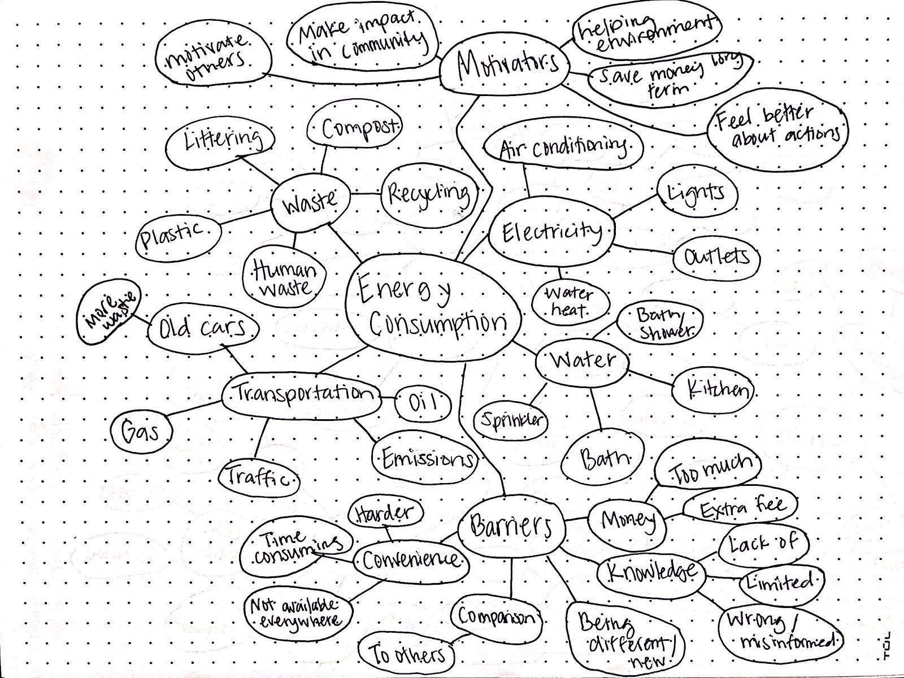
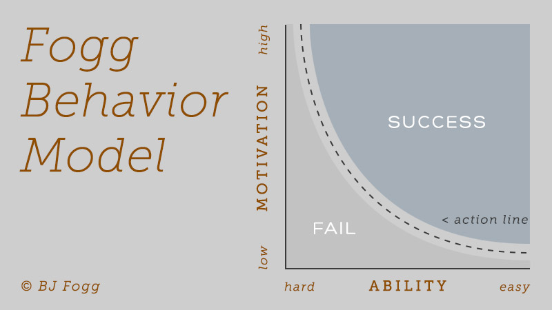
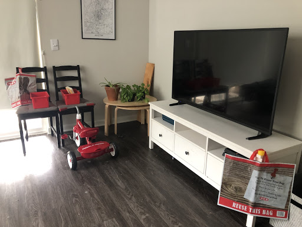
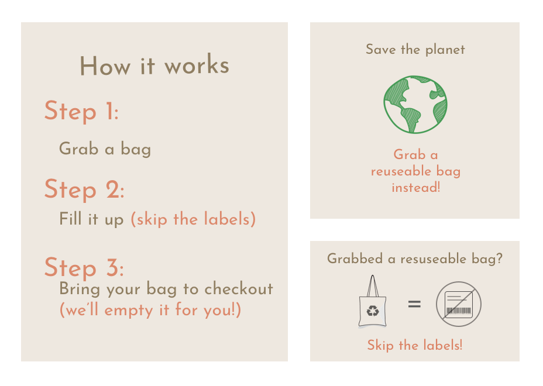

Ecobags
Using persuasive design to make environmental change

Overview
For this project, I used my communication and problem solving skills to conduct qualitative usability testing for a persuasive design project.
The design challenge for this project was to persuade test users through design to choose an eco-friendly bag over a plastic bag when presented with the choice in a grocery store.
My personal challenge was conducting user testing without the bag and without the grocery store.
Audience
My target users were people who physically shop at grocery stores.
I decided these were my users because these were people that have already experienced/would be most likely to experience the interaction between a shopper and a produce bag.
Team/Role
I worked alone on the overall project, although I did get feedback from a group of classmates on design decisions during the ideation phase. Their feedback helped me improve my overall design and gave insight on potential solutions that I otherwise could have overlooked.
Constraints
Short time period. I had two weeks to define a problem, conduct research, come up with a prototype, and find users for testing.
Limited resources. This was more of a constraint on visual design. I was testing a new concept of grocery bags, but didn't have the bag designed and ready to use.
No grocery store. The whole challenge is focused around an interaction that takes place in grocery stores and food marts, and I didn't have this setting to create a realistic testing phase.
Design Process
Defining the Problem
I didn’t start with a particular problem for this project. I began my design process by creating a mind map around energy consumption. From there, I expanded on waste, then plastic waste, then eventually landed on the idea behind this project, which was the overuse of plastic produce bags.
From there, I polished my problem statement to reflect the persuasive design project:
Persuade a user to choose an eco-friendly bag over a plastic produce bag when grocery shopping.
Research
Before doing research on the bags and the shopping experience, I did some research on persuasive design strategy. I focused on this first because I wanted to get some insight on what convinces someone to change a habit and incorporate that into my design ideas.
I did a lot of reading, and the Fogg Behavior Model sums up a lot of what I found. The model shows the idea that if you want a behavior to take place, look for ways to boost motivation or ability (or both). So how do I do that for eco-friendly produce bags?
I took this insight and sketched out some different design solutions. I thought of motivators: like rewarding someone with a coupon or shaming them for their current actions. I thought of ability or simplicity: like the convenience of the bags themselves or taking a step out of the shopping process (because why use an eco-friendly bag and print out a bunch of labels). These were quick sketches that I took back to my classmates and professor to get some feedback. A lot of us agreed that convenience seemed like an important component to design for, and that a lot of these ideas could even be combined (much like the Fogg model).
I did some research on eco-friendly bags: I wanted to know if convenience actually was an issue, what options were out there, how easy they were to obtain, and how popular they were. With this research, I found that convenience was something I needed to solve for, so for my first phase of testing I made sure to focus solely on this. I wanted to know if convenience alone could persuade someone to pick an eco-friendly bag.
Design/Testing
Not only was this my first round of usability testing within the scope of this project, but this was also the first opportunity I had as a student to reach the testing phase of the design process. I set myself up with the intention of testing small and testing often.
Just like I narrowed down my problem, I also narrowed down my solutions and tested them one at a time. There’s a lot of things that go into a design solution, and I won’t know where things start to fail if I’m doing it all at once.
My first round of testing went really well; I set up a grocery store in my living room and observed my shoppers as they decided which bag to go for (the convenient one, of course). I told them there was no wrong way to shop; I didn’t tell them what I was looking for, because I didn’t want it to affect their decisions.
I knew during the second round of testing, I would completely rule out the convenience factor since it was tested already. But with the eco-friendly bag still in a hypothetical state, I needed to design the experience in a way that still persuaded my testers to pick the right bag.
I took what I knew from my research. I already tested the ability to choose the bag, but I hadn’t designed a way to motivate someone to choose the bag. I used this and applied it to creating a shopping experience that guided the user with visual cues and instructions. These visual cues had small motivating factors, like the saving the planet and saving time by skipping the labels, and the instructions were designed to make testers feel comfortable with the decision they were making and rule out and chance of confusion or doubt.
My second round of testing was going well. I had my first shopper (who was a UX professor) go through the shopping experience, he picked the eco-friendly bag and filled it up, and I was his cashier. At the end he said “do you have any questions?” to which I replied, “do you have any questions?”
I quickly realized the biggest flaw in my entire project: I had been observing my testers, taking mental notes, and expecting everything to go as intended. This was when I realized as a designer how important it is to document everything. I immediately stopped my testing, got out a notebook, and took a moment to put into words what my intent was for my testing. What was I trying to learn and how would this affect the direction of my design?
Once I had my questions written down, I started the testing again. From then on I constantly had my notebook in my hands and I made sure to write down everything so I could look back on it later. Some testers threw me for a loop and I had to toss all of my questions out the window and write down new ones as I was interviewing, which was still okay because I knew what my intent was.
Results
These results reflect the last round of testing with a group of 10 testers.
80% Success rate
10% Thought the reusable bag was less convenient
10% Chose the bag by mistake
Retrospective
At the end of the project, I really learned to appreciate all of the notes I took. I didn’t have the designed bag or a grocery store to test in, so a qualitative analysis for the entire testing phase was integral for me to be able to move forward with any design decisions. I needed a lot of feedback from my testers so I could compare their testing experience with their usual shopping experience and understand why they made the decisions they did.
While this was a small project I worked on alone, I also see the value of having that ability to share my insights with other designers or other teams, just like I did at the beginning of the project with my sketches.
If I had more time or resources for this project, I would have loved to move forward with the physical design of the bag and do another round of testing, but learning the value of qualitative design research skills was the greatest gain from this persuasive design challenge.